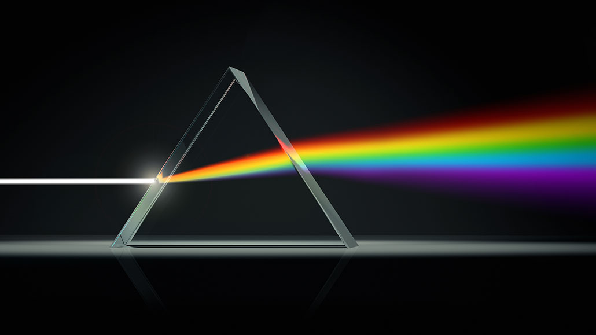

The Evolution of Light Theory: From Ancient Civilizations to Quantum Physics
Historical theories about the nature of light and the development of modern physics
Ancient civilizations’ early understanding of light
Ancient civilizations developed early theories about the nature of light. The ancient Egyptians believed that light was the activity of their god Ra. When Ra’s eye (the sun) was open, it was day, and when it was closed, it was night. In the 5th century BC, Empedocles argued that everything is made up of four elements (fire, air, earth, and water), and believed that the goddess Aphrodite created the human eye from these four elements and lit a fire within it to make vision possible.
Around 300 BC, Euclid wrote Optica, in which he mathematically studied the laws of reflection, assuming that light travels in straight lines. He questioned the idea that light rays from the eye create vision, asking how it is that if you close your eyes at night and then open them, you can immediately see the stars.
Newton’s particle theory
In his 1675 Hypothesis of Light, Isaac Newton argued that light is composed of particles of matter (corpuscules) emitted from a source in all directions. Newton’s particle theory could explain the straight path and reflection of light, but the diffraction of light observed by Francesco Grimaldi suggested that light particles in the ether could create localized waves.
However, Newton’s particle theory had several limitations: he claimed that different colors of light had different masses of particles; to explain refraction, he incorrectly assumed that light particles accelerate when they enter a denser medium because of the greater gravitational pull; and he used the fact that light travels in straight lines, whereas waves are known to bend around obstacles, as an argument against the wave theory.
Subhuns’ wave theory
Christian Subhuns (1629-1695) developed a mathematical wave theory of light in 1678 and published it in his Treatise on Light in 1690. He proposed that light is emitted in the form of waves in all directions from a medium he called the “luminiferous aether”. Since waves are not affected by gravity, he assumed that they slow down when they enter a denser medium.
In 1690, Subhuns argued that light was a wave and that birefringence (double refraction) could be explained using this theory. Another proponent of the wave theory was Leonhard Euler, who argued in his 1746 New Theory of Light and Color (Nova theoria lucis et colorum) that diffraction could be more easily explained by the wave theory.
Thomas Young’s revolutionary double-slit experiment
In 1801, Thomas Young performed the groundbreaking double-slit experiment that demonstrated that light behaves as a wave. In this experiment, laser light passed through two slits in a wall and spread out as a wave, and the waves from each slit interfered with each other, creating a pattern of light and dark spots on different sides of the wall. This interference pattern could not be explained by Newton’s particle theory.
Young was the first to publicly proclaim the “general law of interference” in his 1802 book A Syllabus of a Course of Lectures on Natural and Experimental Philosophy. He also proposed that different colors are caused by different wavelengths of light and explained color vision with three color receptors in the eye.
In addition to proving the wave nature of light, the double-slit experiment became a textbook example of wave-particle duality, a fundamental concept in quantum mechanics. In modern experiments, if the intensity of an electron source is reduced to the point where only a single electron is detected, dots that appear to be individual particles will eventually form an interference pattern. This proves that quantum electrons exhibit properties of both waves and particles.
Einstein’s photoelectric effect theory
In 1900, Max Planck proposed to explain blackbody radiation that light is a wave, but that it can only gain or lose energy in finite amounts related to its frequency. Planck called this “lump” of light energy a “quanta.”
In 1905, Albert Einstein used the concept of light quanta to explain the photoelectric effect. Einstein proposed that light is composed of individual quanta (later named photons) with energy above a certain frequency, and that these quanta cause electrons to be emitted from a metal surface.
This theory successfully explained many observations of the photoelectric effect. For example, Einstein explained that only photons with frequencies above a certain threshold (work function) with enough energy to free an electron can emit an electron. Photons of blue light had enough energy to free electrons in the metals he used, but photons of red light did not.
A series of experiments performed by Arthur Compton from 1922 to 1924 confirmed the particle theory by proving the momentum of light. These experiments were instrumental in resolving contradictory evidence of light’s wave-like interference and particle-like collisions.
Light in modern physics: wave-particle duality
Modern physics accepts the concept of wave-particle duality, which states that quantum systems, including light, exhibit either particle or wave properties depending on the experimental context. In the 19th and early 20th centuries, light was first found to behave as a wave and then later found to have particle-like behavior, while electrons were found to behave like particles in early experiments and then later to exhibit wave-like behavior.
Quantum mechanics explains that light is both a particle and a wave in one sense, and in another sense it is neither a particle nor a wave (in fact, these are macroscopic phenomena, like baseballs or ocean waves). Instead, under certain approximations, light can sometimes be described by math that lends itself to one kind of macroscopic analogy (particles) and sometimes by another (waves).
Quantum physics also explains that photons can be viewed as packets of particles that follow a particle probability distribution predicted by the wave equation. These particles are associated with discrete values, called quanta, for properties such as spin, charge, and magnetic moment. The particles arrive randomly, one at a time, but they form a pattern. The probability that an experiment measures a particle at a point is the square of the complex-valued wave. Experiments can be designed to show diffraction and interference of probability amplitudes, so that a statistically large number of random particle appearances can exhibit wave-like properties.
Recent research and advances
Recent research has focused on the timing of the photoelectric effect. Scientists have found that the time between photon absorption and electron emission is very short, making it difficult to measure. Notable advances include the first measurement of an atosecond photoemission delay at X-ray wavelengths.
In 2023, researchers at Northeastern University made a breakthrough discovery that challenged what scientists knew about how photoluminescence works. And in 2024, scientists at SLAC National Accelerator Laboratory used atosecond X-ray pulses to reveal new information about the photoelectric effect.
These studies deepen our understanding of the fundamental interaction of light and matter, and provide inspiration for exploring new fields such as quantum gravity. The researchers also found that free electrons can absorb and emit laser light, and that this asymmetrically changes the electron’s rotation, which provides new insights into the photoelectric effect.
Philosophical implications of light wave-particle duality
More than just a scientific phenomenon, the wave-particle duality of light raises deep philosophical questions about the nature of reality. Light is both a particle and a wave, the fastest thing in the universe, and it holds the secrets of reality in ways we cannot fully comprehend.
What’s even more amazing is that all matter, not just light, has a wave-particle duality - this applies to everything, including you. As explained in the Feynman lecture, quantum systems obey the wave equation, which predicts the probability distribution of particles.
These concepts challenge the way we perceive reality and continue to influence science, philosophy, and the fundamental way we understand the world.
The study of light in Islamic times
The contributions of Islamic civilization to our understanding of light are significant. During the Golden Age of Islam, which spanned the 8th through 13th centuries, scientists built on Greek knowledge to conduct original research into the nature of light.
Al-Kindi (800-873) was a great philosopher of the Islamic era who conducted the first important work in optics. He experimentally proved the straightness of light in the tradition of Euclid and studied the geometry of the visual cone.
The most notable is Alhazen (965-1040), who is often referred to as the ‘father of modern optics’ and described as the greatest physicist between Archimedes and Newton. Alhazen completed the Book of Light (Kitab-al Manzir), which was the first comprehensive study of optics, covering the physiology of the eye, the refractive and focusing properties of lenses and mirrors, and more.
Alhazen proved the long-standing theories of Euclid, Herod, and Ptolemy that light comes from the eye wrong and showed that light originates from a light source. He performed a simple experiment in a darkroom in which he directed light from two lanterns through an aperture. He also invented the first needle-point camera (later called the camera obscura by Kepler) and explained why images appear upside down in a needle-point camera.
Furthermore, Alhazen’s theory of vision was not limited to simply explaining how light originates from an object and enters the eye; he proved that image perception occurs in the brain, not the eye, and that the position of an image is largely determined by psychological factors.
History of measuring the speed of light propagation
The measurement of the speed of light is an important part of the history of physics. In the 17th century, Galileo attempted to measure the speed of light. In 1676, Danish physicist Ole Römer used a telescope to observe the motion of Jupiter and its moon Io. He noted the apparent difference in the periods of Io’s orbits and calculated that light takes about 22 minutes to traverse the diameter of Earth’s orbit.
In the 19th century, more precise measurements were made. In 1849, Hippolyte Pizzo conducted an experiment in which he sent light to a mirror several kilometers away. By placing a rotating cog in the path of the light, he calculated the speed of light and obtained a value of 313,000,000 m/s.
In 1862, Léon Foucault used a rotating mirror and obtained a value of 298,000,000 m/s. Albert Meikelson conducted experiments on the speed of light from 1877 until his death in 1931. In 1926, he improved his rotating mirror to measure the time it takes light to travel from Mount Wilson to Mount San Antonio in California, and after precise measurements, he obtained a speed of 299,796,000 m/s.
Today, the speed of light in a vacuum is defined as exactly 299,792,458 m/s, because in the SI system of units, the meter is defined based on the speed of light.
Maxwell and electromagnetic wave theory
James Clerk Maxwell (1831-1879) finalized the classical understanding of light. In his efforts to unify two natural forces, electric and magnetic, Maxwell proved that light is a wave composed of electric and magnetic fields.
Through the work of Michael Faraday, it was known that temporal changes in magnetic fields generate electric forces. Maxwell’s insight was that if electricity and magnetism were two sides of the same coin, then changes in the electric field should likewise generate a magnetic field. This concept motivated him to add a term to Anfert’s law corresponding to the rate of temporal change of the electric field.
This addition immediately led to a wave equation for electromagnetic waves propagating at the same speed as light (3 × 10^8 m/s). The image of light thus formed was a wave of electric and magnetic fields perpendicular to each other, with the direction of propagation perpendicular to both the electric and magnetic fields. Maxwell published this result in 1865, and Heinrich Hertz proved it experimentally in 1888.
The birth of quantum optics
After the invention of the laser, there was a need for a more accurate description of the various properties of light. In a series of groundbreaking papers in 1963, Roy Glauber explained the difference between laser (coherent) light and ordinary (blackbody) light in terms of photon statistics. This work had far-reaching implications because it showed that there could be different kinds of light sources that should be distinguished based on the quantum state of the light and its statistical properties.
In 1977, H. Jeff Kimble and colleagues demonstrated that a single atom emits one photon at a time, which was strong evidence that light is composed of photons. Since then, previously unknown quantum states of light have been discovered, such as squeezed light, that have properties that differ from the classical state.
The development of ultrashort and ultrashort laser pulses (generated by Q-switching and mode-locking techniques) paved the way for the study of what are known as ultrafast processes. Applications for the study of solids (e.g. Raman spectroscopy) were found, and the mechanical forces of light on matter were studied: laser beams helped to levitate and position atomic clouds or even small biological samples in optical traps or optical tweezers.